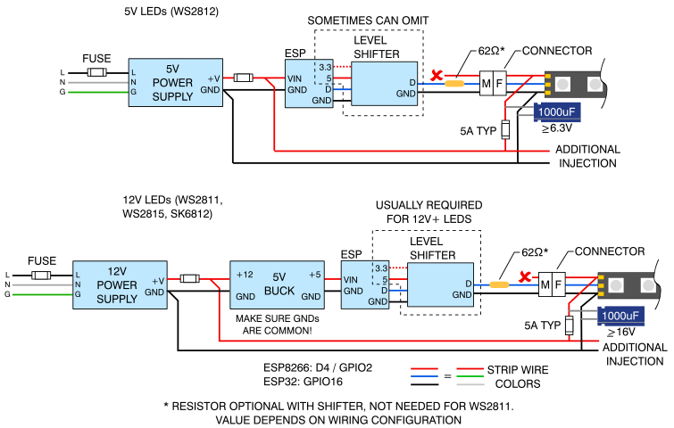
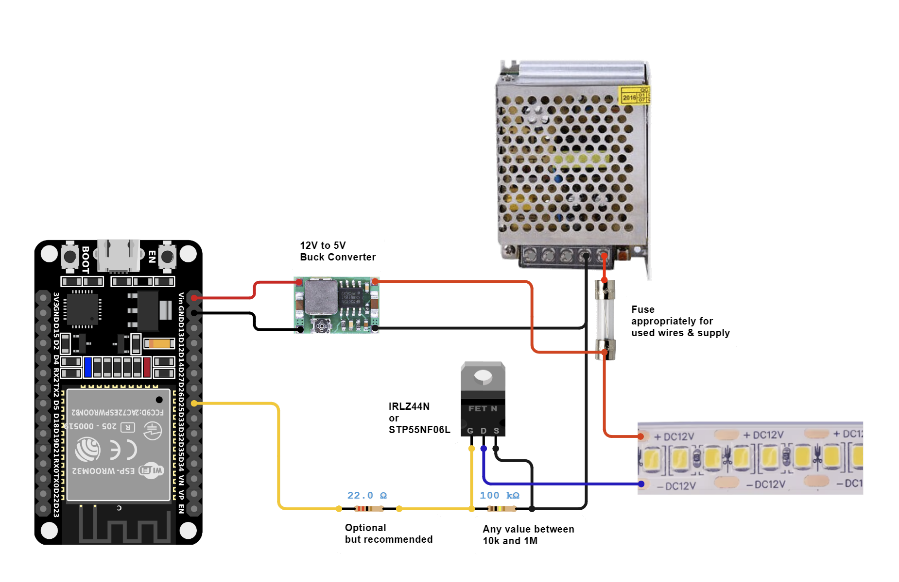

![]()
Microcontroller Service Tools
ยินดีต้อนรับสู่โปรแกรมติดตั้งผ่านเว็บไซต์ WLED! Installer
- เสียบ ESP ของคุณเข้ากับพอร์ต USB เพื่อติดตั้ง WLED 0.12.0
- กด "Install" และเลือกพอร์ต COM ที่ถูกต้อง ไม่พบอุปกรณ์ใช่หรือไม่?
- ติดตั้งและเชื่อมต่อ WLED ในเวลาไม่ถึง 3 นาที!
Infometion
ยินดีต้อนรับสู่โครงการ WLED!
การนำ ESP32/ESP8266 เว็บเซิร์ฟเวอร์มาใช้งานอย่างรวดเร็วและมีคุณสมบัติมากมายเพื่อควบคุม LED NeoPixel (WS2812B, WS2811, SK6812) หรือชิปเซ็ตที่ใช้ SPI เช่น WS2801 และ APA102
คุณสมบัติ
- ไลบรารี WS2812FX ที่ผสานรวมสำหรับเอฟเฟกต์พิเศษมากกว่า 100 รายการ
- เอฟเฟกต์ FastLED และจานสี 50 แบบ
- UI ที่ทันสมัยพร้อมการควบคุมสี เอฟเฟกต์ และส่วนต่างๆ
- ส่วนต่างๆ สำหรับกำหนดเอฟเฟกต์และสีต่างๆ ให้กับส่วนต่างๆ ของ LED
- หน้าการตั้งค่า - การกำหนดค่าผ่านเครือข่าย
- โหมดจุดเชื่อมต่อและสถานี - AP ที่ปลอดภัยโดยอัตโนมัติ
- เอาต์พุต LED สูงสุด 3 ดวงต่ออินสแตนซ์ ESP8266 และเอาต์พุต LED 10 ดวงต่ออินสแตนซ์ ESP32
- รองรับแถบ RGBW
- มีค่าที่ตั้งไว้ล่วงหน้าสำหรับผู้ใช้สูงสุด 250 ค่าเพื่อบันทึกและโหลดสี/เอฟเฟกต์ได้อย่างง่ายดาย รองรับการวนซ้ำผ่านค่าเหล่านั้น
- พรีเซ็ตสามารถใช้เพื่อดำเนินการเรียก API โดยอัตโนมัติ
- ฟังก์ชันไฟกลางคืน (หรี่แสงลงทีละน้อย)
- อัปเดตซอฟต์แวร์ OTA เต็มรูปแบบ (HTTP + ArduinoOTA) ป้องกันด้วยรหัสผ่าน
- นาฬิกาอะนาล็อกที่กำหนดค่าได้ + รองรับชุด Cronixie โดย Diamex
- ตั้งค่าขีดจำกัดความสว่างอัตโนมัติได้เพื่อการทำงานที่ปลอดภัยยิ่งขึ้น
- การกำหนดค่าตามระบบไฟล์เพื่อการสำรองข้อมูลพรีเซ็ตและการตั้งค่าที่ง่ายขึ้น
- การบูรณาการ Native Home-Assistant :เริ่มการกำหนดค่าการรวม Homeassistant ดั้งเดิม
คู่มือเริ่มต้นอย่างรวดเร็ว
- เชื่อมต่อแถบไฟ LED RGB(W) ที่เข้ากันได้กับ WS2812B เข้ากับ GPIO2 บนบอร์ดพัฒนาที่ใช้ ESP8266 ส่วนใหญ่พินนี้จะติดป้ายว่า D4 บนบอร์ดที่ใช้ ESP32 ให้ใช้ IO16 หรือ G16 หรือ 16. หากไม่สามารถทำให้สายเชื่อมต่อสั้นลงได้ ให้ใช้ตัวเลื่อนระดับ/ตัวแปลทางเลือกอื่นคือ เชื่อมต่อปุ่มกดแบบเปิดตามปกติเข้ากับ GPIO0 (พิน NodeMCU/Wemos D3 เมื่อใช้ ESP32 IO17) และกราวด์สำหรับการดำเนินการที่กำหนดค่าได้
หมายเหตุ : การตั้งชื่อพินของบอร์ดจะแตกต่างกันไปขึ้นอยู่กับผู้ผลิต โปรดใช้พินเอาต์ของบอร์ดจากบอร์ดเฉพาะที่คุณซื้อและใช้พิน GPIO เพื่ออ้างอิงคู่มือนี้อย่าลืมเชื่อมต่อ ESP และกราวด์ของแถบ LED เข้าด้วยกัน

ในขณะที่ใช้ ESP8266 และ LED ที่มีนาฬิกาและข้อมูล คุณสามารถใช้ฮาร์ดแวร์ SPI (ส่วนใหญ่เร็วกว่า) หรือซอฟต์แวร์ SPI ได้
- ฮาร์ดแวร์ SPI : ใช้GPIO14(SCLK) สำหรับนาฬิกาและ GPIO13(MOSI) สำหรับข้อมูล
- SPI ของซอฟต์แวร์ : เนื่องจากพินทั้งหมดสามารถเปลี่ยนได้ในส่วนฮาร์ดแวร์ของการตั้งค่า LED คุณจึงสามารถใช้พินใดก็ได้ แนะนำให้ใช้GPIO1(TxD) สำหรับนาฬิกาและGPIO2(D4) สำหรับข้อมูล
เพื่อการใช้งานที่ปลอดภัย ขอแนะนำให้คุณเลือกขนาดสายไฟให้ถูกต้องและรวมฟิวส์เข้าด้วยกัน สำหรับข้อมูลอ้างอิง คุณสามารถใช้เครื่องคำนวณกำลังไฟ สายไฟ และ ฟิวส์ LED ได้
สำหรับ LED แบบอะนาล็อก MOSFET IRLZ44N หรือ STP55NF06L ถือเป็นตัวเลือกที่ดี ตัวอย่างวงจร :

- แฟลชซอฟต์แวร์ลงในโมดูล ESP ของคุณ! มีสองตัวเลือกสำหรับขั้นตอนนี้ :
- ฉันแค่อยากใช้ WLED! (ติดตั้งไบนารีรุ่น)
- ผมอยากแก้ไข WLED (คอมไพล์จากโค้ดต้นฉบับ)
หากทุกอย่างทำงานได้ LED 30 ดวงแรกจะสว่างขึ้นเป็นสีส้มสดใสเพื่อกระตุ้นให้เกิดความกล้าหาญ มิตรภาพ และความสำเร็จ!
- ใช้อุปกรณ์ WiFi เพื่อเชื่อมต่อกับจุดเชื่อมต่อWLED-APโดยใช้รหัสผ่านเริ่มต้นwled1234คุณสามารถสแกนรหัส QR นี้ได้ :

ไปที่ IP 4.3.2.1 ในเบราว์เซอร์ของคุณเพื่อควบคุมไฟของคุณ! คุณควรสามารถเชื่อมต่อได้ wled.me หากอยู่ในโหมดจุดเชื่อมต่อ (เซิร์ฟเวอร์ DNS ที่ฝังไว้)
การตั้งค่า WiFi
วิธีเชื่อมต่อโมดูล WLED กับ Wi-fi ที่บ้านของคุณ :
- คลิก ไอคอน Config (รูปเฟือง) เพื่อแก้ไขการตั้งค่าโมดูล WLED ของคุณ และเลือก "การตั้งค่า WiFi"
- สำหรับเครือข่ายภายในบ้านส่วนใหญ่ เพียงป้อนชื่อเครือข่าย Wi-Fi และรหัสผ่านเครือข่ายของคุณ นอกจากนี้ คุณยังสามารถเปลี่ยนที่อยู่ mDNS สำหรับโมดูล WLED ของคุณได้
- คลิกบันทึก และ เชื่อมต่อ ที่ด้านล่างของหน้า
- เชื่อมต่ออุปกรณ์ของคุณกับเครือข่าย Wifi ที่บ้านอีกครั้ง
- ตรวจสอบรายการอุปกรณ์ในอินเทอร์เฟซผู้ใช้ของเราเตอร์เพื่อดู IP ของอุปกรณ์ WLED ในเครือข่าย local ของคุณ หากต้องการค้นหาโดยอัตโนมัติ ให้ใช้แอป WLED Native! สนุกกับซอฟต์แวร์ WLED ได้เลย!
ขั้นตอนการอัพเดตซอฟต์แวร์
- วิธีที่ 1 : แฟลชการอัพเดตใหม่แบบเดียวกับการติดตั้งใหม่ (ดูด้านบน)
- วิธีที่ 2 : ซอฟต์แวร์มีความสามารถในการอัปเดตซอฟต์แวร์ OTA แบบรวม ก่อนอื่นคุณต้องเปิดใช้งานโดยพิมพ์รหัสผ่าน OTA ที่ถูกต้อง (ค่าเริ่มต้น : "wledota") ในเมนูการตั้งค่า ลบเครื่องหมายถูกในช่องทำเครื่องหมาย "OTA lock" จากนั้นบันทึกการตั้งค่าและรีบูต ESP จากนั้นคุณสามารถเลือก "อัปเดต OTA ด้วยตนเอง" ในการตั้งค่าความปลอดภัยและอัปโหลดไบนารีที่เผยแพร่เมื่อเสร็จแล้วขอแนะนำให้ล็อกฟังก์ชัน OTA อีกครั้ง เมื่อต้องการทำเช่นนี้ ให้ทำเครื่องหมายที่ช่องทำเครื่องหมายอีกครั้ง (คุณสามารถเปลี่ยนรหัสผ่านได้โดยพิมพ์รหัสผ่านใหม่ตอนนี้) รีบูต หากคุณพยายามเข้าถึงหน้าอัปเดตตอนนี้ คุณควรเห็นข้อความ "OTA lock active"
- วิธีที่ 3 : รองรับ ArduinoOTA ด้วย
Credits
ขอขอบคุณนักพัฒนา WLED!
ผู้สนับสนุนโดยตรงต่อโค้ด WLED
- 8-BitBrett สร้างรหัส QR เชื่อมต่อ WiFi อัตโนมัติด้วยโลโก้ Aircoookie/WLED!
- adamo สร้างโลโก้เซิร์ฟเวอร์ Discord แบบเคลื่อนไหว!
- @blazoncek สร้างคุณลักษณะใหม่และปรับปรุงมากมายในหลายส่วนของ WLED!
- @debsahu นำเสนอการค้นหาอัตโนมัติ HomeAssistant และช่วยเหลือ PIO มากมาย!
- @ewowi ปรับปรุงประสิทธิภาพมากมาย ทั้ง 2D, เสียง และการปรับปรุงผู้ใช้ต่างๆ ผู้ดูแลระบบ MoonModules
- @frenck สร้างการบูรณาการแบบเนทีฟกับ HomeAssistant ได้อย่างน่าทึ่ง มีเสถียรภาพและเต็มไปด้วยคุณสมบัติ!
- @Moustachauve เพิ่มการแสดงภาพจานสีและพัฒนาแอป WLED Native สำหรับ Android และ iOS!
- @pbolduc การซิงโครไนซ์ DDP UDP, ปรับปรุง UI และการปรับแต่งของผู้ใช้
- @photocromax ช่วยนำคุณสมบัติการแสดงภาพสดให้มีชีวิตชีวา
- @raymiec กำลังทำงานในการสร้างไคลเอนต์ที่ดีที่สุดสำหรับ Android และ iOS!
- @scottrbailey เพิ่มการแสดงภาพระยะไกล JSON IR และ gif สำหรับเอกสาร
- @softhack007 การประมวลผลเสียง การสนับสนุน MCU ใหม่ การตรวจสอบโค้ด และการเพิ่มประสิทธิภาพต่างๆ ผู้ดูแลระบบ MoonModules
- @StormPie ผู้สร้าง UI มือถือสุดเจ๋ง!
- @timothybrown เพิ่มการตรวจสอบสิทธิ์ MQTT!
- @viknet365 พอร์ตเอฟเฟกต์ Meteor!
- @wiesendaniel เพิ่มการกำหนดค่าสำหรับ PlatformIO IDE!
- @YeonV จัดเตรียมการกำหนดค่าแสง MQTT ของ HomeAssistant เบื้องต้น!
- @werkstrom เพิ่มตัวแปลง PixelArt
- @netmindz เอฟเฟกต์ Audio Reactive ตามความถี่และจานสี Audio Reactive ผู้ดูแลระบบ MoonModules ผู้จัดการการเผยแพร่ WLED
GitHub | kno.wled.ge